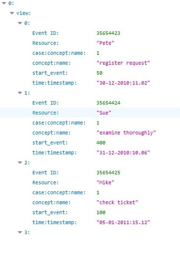
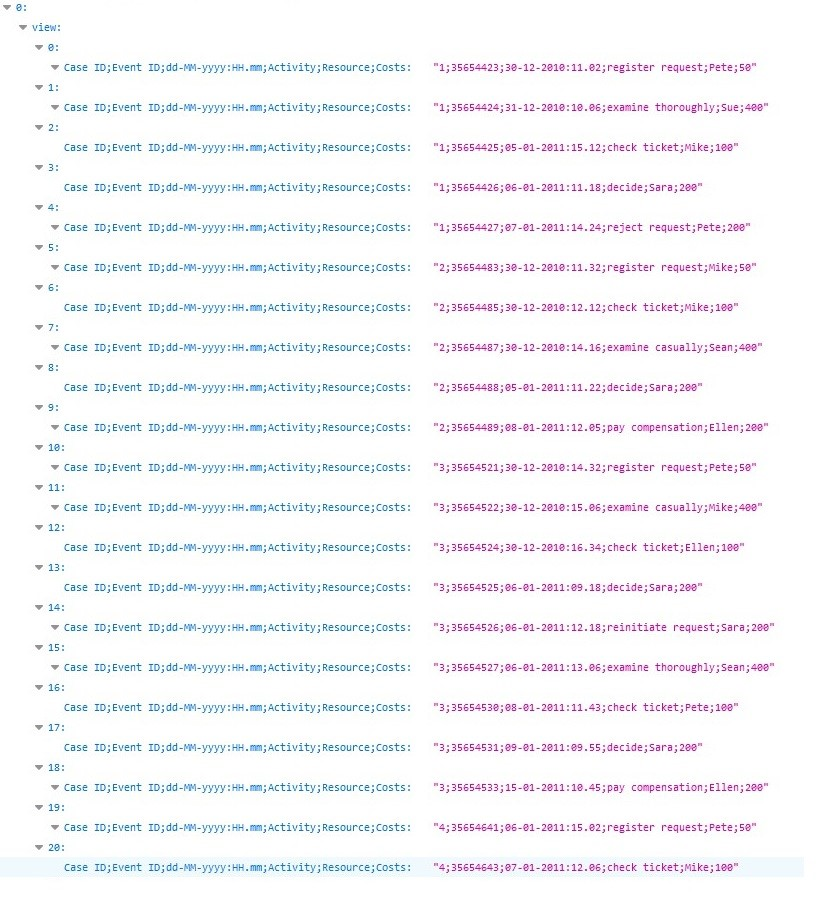

View¶
View information of xes file
The user can view the content of his uploaded .xes file. The user has to call the endpoint:
http://127.0.0.1:5000/statistics?filename=(name_of_file).xes.
The following screenshot is an example with the contents of repair-example.csv file.
get:
description: Auto generated using Swagger Inspector
parameters:
name: filename
in: query
schema:
type: string
example: repairexample.xes
responses:
‘200’:
description: Auto generated using Swagger Inspector
content:
application/json:
schema:
type: object
properties: {}
examples:
‘0’:
value: |
[
{
“dictionary”: {
“Analyze Defect”: 2208,
“Archive Repair”: 1000,
“Inform User”: 1102,
“Register”: 1104,
“Repair (Complex)”: 1449,
“Repair (Simple)”: 1570,
“Restart Repair”: 406,
“Test Repair”: 3016
},
“endactivities”: {
“Archive Repair”: 1000,
“Inform User”: 27,
“Repair (Complex)”: 2,
“Test Repair”: 75
},
“noevents”: 11855,
“notraces”: 1104,
“startactivities”: {
“Register”: 1104
},
“tracelist”: “{"[‘concept:name’, ‘description’]"}”
}
]
View information of csv file
The user can view the content of his uploaded .csv file. The user has to call the endpoint:
http://127.0.0.1:5000/csvstatistics?filename=(name_of_file).csv&seperator=(csv_column_separtor)&caseconcept=(the_column to rename)&conceptname=(the_column to rename)×tamp=(the_column to rename)&startevent=(the_column to rename).
The following screenshot is an example with the contents of repair-example.csv file.
Test scenarios
get:
description: Auto generated using Swagger Inspector
parameters:
name: caseconcept
in: query
schema:
type: string
example: Case%20ID
name: filename
in: query
schema:
type: string
example: running-example.csv
name: startevent
in: query
schema:
type: string
example: Costs
name: conceptname
in: query
schema:
type: string
example: Activity
name: seperator
in: query
schema:
type: string
example: ;
name: timestamp
in: query
schema:
type: string
example: ‘dd-MM-yyyy:HH.mm’
responses:
‘200’:
description: Auto generated using Swagger Inspector
content:
application/json:
schema:
type: object
properties: {}
examples:
‘0’:
value: |
[
{
“dictionary”: {
“check ticket”: 9,
“decide”: 9,
“examine casually”: 6,
“examine thoroughly”: 3,
“pay compensation”: 3,
“register request”: 6,
“reinitiate request”: 3,
“reject request”: 3
},
“endactivities”: {
“pay compensation”: 3,
“reject request”: 3
},
“noevents”: 42,
“notraces”: 6,
“startactivities”: {
“register request”: 6
},
“tracelist”: “{"[‘concept:name’]"}”
}
]